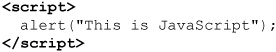
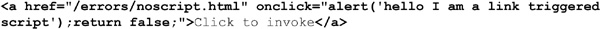
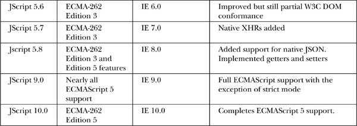

JavaScript is the premier client-side scripting language used on the Web today. It’s widely used in tasks ranging from the validation of form data to the creation of complex user interfaces. JavaScript is the interactive member of the trinity of client-side Web technologies that also includes HTML and CSS, and as such, Web developers would be remiss not to master it. With mastery, there are few limits to how the language may be used online, as it can dynamically manipulate the very content, markup, and style of Web pages. This chapter serves as a brief introduction to the language and how it is included in Web pages.
Our first look at JavaScript is the ever-popular “Hello World” example. Here we use JavaScript to write the string “Hello World from JavaScript!” into a simple HTML5 document.
ONLINE http://javascriptref.com/3ed/ch1/hellojsworld.html
Notice how the script is included directly in the markup using the <script> element, which encloses the following simple one-line script:
Using the <script> element allows the browser to differentiate between what is JavaScript and what is XHTML markup or regular text. A rendering of the example is shown in Figure 1-1.
Figure 1-1 JavaScript Hello World example
If we want to embolden the text, we could modify the script to output not only some text but also some markup. However, we need to be careful when the worlds of JavaScript and markup in XHTML intersect—they are two different technologies. This intersection allows us to easily demonstrate our first mistake using JavaScript. For example, consider what would happen if we substituted the following <script> block in the preceding document, hoping that it would emphasize the text.
ONLINE http://javascriptref.com/3ed/ch1/hellojserror.html
Doing so should cause the script to fail and no content to render, as shown here:
The reason for the code failure is that <strong> tags are markup, not JavaScript. Because the browser treats everything enclosed in <script> tags as JavaScript, it naturally throws an error when it encounters something that is out of place. Unfortunately, modern Web browsers are generally quite silent about the state of their errant scripts. The only indication an error has occurred within Internet Explorer is a small error icon (yellow with an exclamation point) in the lower left-hand corner of the browser’s status bar:
Clicking this icon shows a dialog box like this one with error information:
In order to have errors displayed automatically, you may have to check “Display a notification about every script error,” which can be found under the Advanced tab of the dialog that displays when you select Internet Options.
In many browsers, it may not be very evident that errors are occurring without bringing up a console. For example, here we show Firefox’s Error Console:
Notice that the message isn’t terribly informative about the nature of our error. Depending on the type of error and development tool employed, you may see different types of messages and details, such as shown here in the lower half of the dialog box:
NOTE Browser vendors likely suppress error display by default, given the large volume of errors that would be encountered and possible end user confusion as to the source of the errors—the visited site or their browser software.
Regardless of whether or not the error was displayed, to output the string properly we could either include the <strong> element directly within the output string, like so:
or we could surround the output of the <script> element in a <strong> element like this:
In this case, the <strong> tag happens to surround the output from the JavaScript, so it then gets read and is generally boldfaced by the browser.
This example suggests the importance of understanding the intersection of markup and JavaScript. In fact, before learning JavaScript, readers should fully understand the subtleties of correct XHTML markup. This is not a casual suggestion. Consider first that any JavaScript used within malformed XHTML documents may act unpredictably, particularly if the script tries to manipulate markup that is not well formed. Second, consider that many, if not most, scripts will be used to produce markup and style especially when the Document Object Model (DOM) is employed, so you really need to know what you are outputting. In short, a firm understanding of XHTML is essential to using JavaScript effectively. In this book, we present all examples in valid HTML5 unless otherwise noted.
TIP Readers looking for more information on correct HTML and CSS usage should consult the companion book HTML & CSS: The Complete Reference, Fifth Edition, by Thomas A. Powell (McGraw-Hill Professional, 2010).
As shown in the previous example, the <script> element is commonly used to add script to a document. However, there are actually four ways to include script in an XHTML document:
• Within the <script> element
• Within an HTML event handler attribute such as onclick
• As a linked file referenced using the src attribute of the <script> element
• Using pseudo-URL javascript: syntax within some link
Note that some ancient browser versions support other nonstandard ways to include scripts in your page, such as Netscape 4’s entity inclusion. However, we avoid discussing these in this edition since today these methods are interesting only as historical footnotes and are not used. The following section presents the four common methods for combining markup and JavaScript, and should be studied carefully by all readers before tackling the examples in the rest of the book.
The primary method for including JavaScript within HTML or XHTML is the <script> element. A script-aware browser assumes that all text within the <script> tag is to be interpreted as some form of scripting language; in common browsers, by default, this is JavaScript.

It is possible, however, for the browser to support other scripting languages. For example VBScript is natively supported by the Internet Explorer family of browsers, so you really should be clear about what type of scripting language is being employed.
NOTE When outputting script elements via JavaScript using document.write(), you should be aware of parser problems with open and close <script> tags. Typically it is safest to use string concatenation to split the output of the <script> tag, like so:
The traditional, though nonstandard, way to indicate the scripting language in use is to specify the language attribute for the tag. For example,
indicates that the enclosed content is to be interpreted as JavaScript. Other values are possible; for example,
would be used to indicate VBScript is in use. A browser should ignore the contents of the <script> element when it does not understand the value of its language attribute.
CAUTION Be very careful setting the language attribute for <script>. A simple typo in the value will cause the browser to ignore any content within.
However, according to the W3C HTML syntax, the language attribute should not be used. Instead, the type attribute should be set to indicate the MIME type of the language in use. Many values, including text/javascript, application/javascript, application/x-javascript, text/ecmascript, and application/ecmascript, may be supported but potentially not consistently, as shown here as each browser seems to support different variations of the type value:
ONLINE http://javascriptref.com/3ed/ch1/scriptattributetest.html
NOTE The “W3C” is the World Wide Web Consortium, the international body responsible for standardizing Web-related technologies such as HTML, XML, and CSS. The W3C Web site is www.w3.org, and is the canonical place to look for Web standards information.
For safety reasons, readers are directed to use solely the text/javascript MIME type, as it works in all browsers:
The attribute also can be used to target other languages. For example, a value of text/vbscript would indicate VBScript is in use, as shown here:
Regardless of language, given the two methods and how similar they look, you might initially consider using both attributes like so:
Unfortunately, using this approach is not suggested, as it is unclear which attribute will be favored, particularly if both are in conflict. Furthermore, such markup is invalid.
NOTE According to HTML specifications, besides using the type attribute for <script>, you could also specify the script language in use document-wide via the <meta> element, as in <meta http-equiv=“Content-Script-Type” content=“text/javascript”>. Inclusion of this statement within the <head> element of a document would alleviate any requirement of putting the type attribute on each <script> element. The reality of browsers actively supporting this approach is quite suspect. In this book, we will actually omit the use of the type attribute in almost every example, as we will be using HTML5. The HTML5 specification indicates that in absence of the type attribute, “text/javascript” is assumed, so we follow what many HTML5 authors do and simply rely on the default for simplicity’s sake.
A document can contain any number of <script> elements. Documents will be read and generally executed as they are encountered, unless the invocation of the script is deferred for later. The next example shows the use of three simple printing scripts that run one after another.
ONLINE http://javascriptref.com/3ed/ch1/executionorder.html
While execution proceeds from document top to bottom, it is possible in some situations to see differences in markup output as the individual scripts fire, with some environments buffering different amounts of content as code runs. Be careful not to think too fine-grain about execution order, particularly as the execution model of JavaScript may subtly vary from browser to browser based on how the HTML rendering engine and JavaScript interpreter thread interact. Our main point here is to understand that a top-to-bottom read is inherent but that between browser implementation details and other loading quirks it is dangerous to assume what browser behavior will be.
A special location for the <script> element is within the <head> tag of an XHTML document. Because of the sequential nature of Web documents, the <head> is always read in first, so scripts located here are often referenced later on by scripts in the <body> of the document. Very often scripts within the <head> of a document are used to define variables or functions that may be used later on in the document. The following example shows how the script in the <head> defines a function that is later called by a script within the <script> block later in the <body> of the document.
ONLINE http://javascriptref.com/3ed/ch1/scriptinhead.html
To trigger script execution in response to user activity such as a form action, keypress, or mouse activity, we need to define event handlers. The most direct method, albeit not the cleanest, is to use the event handler attributes on various tags in a document. All event handler attributes start with the word “on,” indicating the event in response to which they’re executed, for example, onclick, ondblclick, and onmouseover. This simple example shows a number of different types of event handler attributes in action:
ONLINE http://javascriptref.com/3ed/ch1/eventhandlers.html
You may wonder which HTML elements have event handler attributes. Beginning with the HTML 4.0 specification, nearly every tag should have one of the core events, such as onclick, ondblclick, onkeydown, onkeypress, onkeyup, onmousedown, onmousemove, onmouseover, and onmouseout, associated with it. HTML5 adds even more; in fact, there are more than 50 event handler attributes defined for nearly every tag in HTML5!
Given such a wide range of events available, it might not seem to make sense to trigger code in some contexts:
However, such flexibility reveals the power of JavaScript to change and control all aspects of a document. We should warn readers, though, that the degree to which each browser supports events and how they are handled varies significantly, and an in-depth discussion on browser differences for event handling can be found in Chapter 11.
NOTE When writing traditional HTML markup, developers would often mix case in the event handlers, for example, onClick. This mixed casing made it easy to pick out event handlers from other markup and had no effect other than improving readability. Remember, these event handlers are part of HTML and would not be case sensitive, so onClick, ONCLICK, onclick, or even oNcLiCK are all valid. Some markup variants like XHTML require all lowercase, so many developers are lowercasing event handler attributes conventionally now.
By putting together a few <script> tags and event handlers, you can start to see how scripts can be constructed. The following example shows how a user event on a form element can be used to trigger the JavaScript we defined in the <head> of a document earlier.
ONLINE http://javascriptref.com/3ed/ch1/eventtrigger.html
A rendering of the previous example is shown in Figure 1-2.
Figure 1-2 JavaScript triggered by a user action
A very important way to include a script in an HTML document is by linking it via the src attribute of a <script> tag. However, to utilize linked scripts correctly we have to add some complexity and exercise caution. We’ll start simple and work toward the best use of linked scripts. Our first step shows how we might quickly put the function from the previous example in a linked JavaScript file.
ONLINE http://javascriptref.com/3ed/ch1/simplelinkedscript.html
Notice in the previous example that the src attribute is set to the value “danger.js”. This value is a URL path to the external script. In this case, it is in the same directory, but it could have just as easily been an absolute URL such as http://www.javascriptref.com/scripts/danger.js. Regardless of the location of the file, all it will contain is the JavaScript code to run—no HTML or other Web technologies. So, in this example, the file danger.js could contain the following script:
The obvious benefit of script files that are external is that they separate the logic, structure, and presentation of a page. With an external script, it is possible to reference the script easily from many pages in a site. This makes maintenance of your code easier because you have to update code common to many pages only in one place (the external script file), rather than on every page. However, to enjoy such a gain, we really need to fully decouple the script from the markup. Notice that we have an event handler attribute, onclick, that contains some code. To extract this script from the markup, first we name the button. In this case, we call it “button1”:
Once named, we can bind an event handler to the button using code like this:

Unfortunately, just stuffing this event binding code like so in danger.js might not be enough:
This approach will not work in all situations, especially where we link the script in the <head> of the document, because it will try binding to a markup element that hasn’t yet been rendered into the DOM tree. To address this, you might simply move the linked script to the bottom of the page:

ONLINE http://javascriptref.com/3ed/ch1/bottomlinkedscript.html
This example works, but in reality it is not optimal because it depends on the order of loading and would be broken simply by moving the inclusion point of the JavaScript. It would be better to wait programmatically until the page or element in question has loaded, rather than try to predict some rendering order of the page. This is easy enough to do with the onload event:
ONLINE http://javascriptref.com/3ed/ch1/linkedscript.html
A version using deferred event binding like this will work and is fully decoupled, but potentially it isn’t safe to work with other scripts. We’ll review techniques to make sure our scripts live safely with others later in the chapter in the section titled, “Living with Other Scripts.”
Before moving on to the next topic, we should briefly cover the pros and cons of using linked scripts. As previously mentioned, it is quite obvious that, when designed properly, linked scripts provide a significant benefit in decoupling page logic from markup. Furthermore, due to this decoupling, the script may be reused easily on other pages and enjoy a performance benefit from caching by a browser. However, these benefits do come with a potential price.
Because linked scripts are loaded over the network, we need to be quite aware of their potential risks. First, the script simply may not load. Second, the script may load slowly and harm overall page rendering. Third, if we are linking to remote scripts not of our own design, we may be opening our page up to significant security risks. All of these issues can be mitigated but will require some work.
Addressing load issues can be mitigated in a variety of ways. First, it is not delivery appropriate to include multiple scripts. Instead of using
combine the various scripts into a single request like so,
In JavaScript, all variables share the same name space, so there isn’t much reason to break up the files on delivery. This also makes any concerns about code delivery a bit more binary—either the script loads or it doesn’t. Furthermore, by eliminating the multiple <script> tags, we reduce the number of requests in the page that likely will speed up rendering.
Another way to improve page rendering times with linked scripts is to put pages toward the bottom of the page or use the defer attribute for linked scripts. For example, if we have linked scripts in the <head> or <body> that do not need to block the browser, we may decide to defer their fetch and execution until later by setting the defer attribute:
Initially, this attribute was supported only in Internet Explorer browsers, though it was added to many others (for example, Firefox 3.5+), so test for support.
NOTE HTML5 introduces a similar attribute, async, that can be used to execute inline scripts asynchronously for page rendering improvements. Some browsers allow async on inline scripts at the time of this edition’s writing.
The use of scripts linked to sites that you do not directly control is simply a matter of blind trust. For example, if you link to our site as shown here:
the script could, as its name suggests, be quite invasive. Since all JavaScript shares name space, it could examine and overwrite other scripts, examine cookies, watch user activity, and more. Even when linking to scripts from trusted entities, you are running the risk that if they are compromised you could be as well. We clearly understand the value of the linking relationship of the Web and encourage it, but we do warn readers that there is an implicit trust relationship in remotely linked scripts.
Finally, in JavaScript-powered browsers, it is possible to invoke a script using the JavaScript pseudo-URL. A pseudo-URL like javascript: alert(“hello”) would invoke a simple alert displaying “hello” when typed directly in the browser’s address bar, as shown here:
Some developers have found this script form quite useful and have designed functions to be executed on pages and saved as bookmarks. When these javascript: links are added as “Favorites” or “Bookmarks” in your browser, they can be clicked in order to carry out a specific task. These scripts, typically dubbed bookmarklets or favlets, are used to resize windows, validate pages, and perform a variety of useful developer-related tasks.
NOTE Running JavaScript via the URL in the form of a bookmark does have some security considerations. Since bookmarklets stored in your browser execute in the context of the current page, a malicious bookmarklet could be used to steal cookies for the current site. For this reason, only install bookmarklets from sites you trust, or only after examining their code.
The most common way to use the JavaScript pseudo-URL is within a link, as demonstrated here:


It should go without saying, but the pseudo-URL inclusion can be used to trigger more than a small amount of JavaScript, so
is just as acceptable as invoking a single function or method.
It is important to note that the javascript: URL scheme does have potential problems when used in links, particularly in a case where a script is off or unsupported. Consider here that, with no script enabled, some of these links may work, as they are just standard URLs, and some may not.
You might mistakenly believe the context of the link will give away the functionality of the link and that it works without JavaScript. In fact, here the login link was a standard link and the other two invoked JavaScript. Without looking at the browser’s status bar, which is often hidden, or viewing the source, the end user simply may not be able to determine why a link is malfunctioning.
To mitigate links that work in some cases and not in others, we could employ a <noscript> element, which will be discussed in the next section, to inform the user of trouble, or better yet we could avoid the use of pseudo-URLs in the href and instead use a pattern like so:

In this case, with the script on the onclick, the JavaScript is run when the link is clicked and then the return false kills the page load. However, with the script off, the code will not run and instead the user will be sent to the error page specified by the href attribute.
The javascript: pseudo-URL has some usage concerns, but it is commonly used despite them. We turn now to address the use and misuse of JavaScript and how we might mitigate some of the challenges we may encounter.
Using JavaScript safely on public-facing Web sites can be quite challenging. Lots of things can and do go wrong, though, sadly, even today many developers are blissfully unaware of such failures. We briefly discuss a few of the challenges with using JavaScript in Web sites and applications, and how to mitigate them. This topic, however, is quite broad and will be dealt with throughout the book; our goal here is simply to present the most important topics and approaches as a framework for later discussion.
Browsers will use or display the content enclosed by any tags they don’t understand, treating it simply as plain text. To avoid confusion in the situation where the <script> tag is somehow unknown, it is useful to mask its enclosed JavaScript from the odd user-agent. One easy way to mask JavaScript is to use HTML comments around the script code. For example:

We note that this masking technique is similar to the method used to hide CSS markup, except that the final line must include a JavaScript comment to mask out the HTML close comment. The reason for this is that the characters – and > have special meaning within JavaScript.
While the comment mask is very common on the Web, it actually is not the appropriate way to do it in strict XML documents including correctly written XHTML. Given that XHTML is an XML-based language, many of the characters found in JavaScript, such as > and &, have special meaning, so there could be trouble with the previous approach. According to the strict XHTML specification, you are supposed to hide the contents of the script from the XHTML-enforcing browser using the following technique:
This approach does not work in any but the strictest XML-enforcing browsers. It generally causes the browser to ignore the script entirely or throw errors, so authors have the option of using linked scripts or traditional comment blocks, or simply ignoring the problem of down-level user-agents.
NOTE Some JavaScript programmers have begun to forgo the use of comment masks on inline scripts. In practice, modern browsers do not have concerns with such code, but consider that user-agents include programs, bots, and other devices you may not be familiar with. To this day, we still see ad hoc bots created that treat script content inappropriately. Our opinion is that if you must put script inline, mask it because it is better to be safe than sorry.
In the situation that a browser does not support JavaScript or that JavaScript is turned off, you should provide an alternative version or at least a warning message telling the user what happened. The <noscript> element can be used to accomplish this very easily. All JavaScript-aware browsers should ignore the contents of <noscript> unless scripting is off. Browsers that aren’t JavaScript-aware will show the enclosed message (and they’ll ignore the contents of the <script> if you’ve remembered to HTML-comment it out). The following example illustrates a simple example of this versatile element’s use.
ONLINE http://javascriptref.com/3ed/ch1/noscript.html
Figure 1-3 shows an example with the script on and off.
Figure 1-3 Script on and off
One interesting use of the <noscript> element is to redirect users to a special error page automatically using a <meta> refresh if they do not have scripting enabled in the browser or are using a very old browser. The following example shows how this might be done:
ONLINE http://javascriptref.com/3ed/ch1/noscriptredirect.html
NOTE Some early version of the HTML specification did not allow the <noscript> tag in the document <head> despite <script> being allowed there, and thus the previous example would not have validated. Under HTML5 this is no longer the case, and the example is conforming.
While the <noscript> tag is quite easy to use, sadly it is rarely employed. Interestingly, it is quite easy, in fact, to use the <noscript> tag itself to prove its value. Consider the following small markup snippet:
You might notice that the image error.gif will only be fetched by the browser in the case that the script is off. Looking at your server logs, you could then determine the impact of script-off visitors. You might even be a bit more direct in your script problem tracking by modifying your image reference like so:
Here we pointed the image source at some server-side script that would record nonscript-supporting users directly. We might even do this without an image return or message if we desire just to gauge the potential problem invisibly. Do note, however, that even this technique is far from perfect, as it assumes the user-agent will fetch the image content. If you look carefully at your log files, you’ll likely note that there is more nonscript-supporting bot traffic than we might have guessed.
A common criticism voiced about JavaScript is the wide range of versions. This is a legitimate concern for JavaScript developers looking for the widest range of compatibility. The core language is fairly well implemented in browsers to adhere to what is defined by the ECMAScript specification. Table 1-1 presents the current versions of ECMAScript.
Table 1-1 Standard Versions of JavaScript
Each browser vendor has evolved its implementation of JavaScript a bit differently. The Netscape branch that later evolved into the Mozilla and Firefox browsers often serves as the reference implementation at least for the core language. The evolution of JavaScript in this family of browsers is detailed in Table 1-2.
Table 1-2 Netscape/Mozilla/Firefox JavaScript Version History

NOTE Inclusion of less-common JavaScript versions supported in modern versions of Firefox requires different type settings for the <script> tag. For example, <script type=“application/javascript;version=1.7”> or <script type=“application/javascript;version=1.8”> would be used to signify JavaScript 1.7 or 1.8, respectively.
Microsoft’s JScript is more ubiquitous, given Internet Explorer’s market share and compatibility with this browser family, and its object model is often a goal for developers. Table 1-3 details the evolution of JavaScript support within these browsers.
Table 1-3 Internet Explorer JScript/JavaScript Version History

NOTE JScript.NET also exists and has more features but is not currently browser based.
Given the variability of browser JavaScript support, it might be useful to use a technique to see what version is supported. A fairly easy way to do this exists under Internet Explorer:
Other browsers do not have such a direct scheme. Generally speaking, you would set a variable equal to the highest form of some simple test script, like so:
Of course, this scheme is of somewhat limited value, first because it relies on the nonstandard language attribute, and second because it doesn’t address how you would handle the newer language properly. For example, consider that you wish to use some of the String trimming methods found in later versions of JavaScript (1.8+). You might be tempted to use the language attribute; however, it is more appropriate to use the type attribute, as follows, to limit execution to those browsers that support that version of the language:
The problem with this scheme is that nothing will run in nonsupporting browsers. Instead, we might want to detect the existence of a feature in question and then dynamically add it or rectify it somehow in browsers lacking the feature, as shown here:
While this technique, called monkey patching (described by Wikipedia as the ad hoc extension of dynamic languages to add or correct some language feature—see http://en.wikipedia.org/wiki/Monkey_patch), works to address missing objects, properties, or methods, it will not work when addressing new language features like let definitions or Array comprehension. In such cases, if you really must use the feature, you will be forced to restrict the language via a <script> tag. If you were intrigued by the need for and power of monkey patching JavaScript, you’ll find the next section simultaneously motivating and disappointing.
The sad reality of JavaScript is that the various browsers often implement JavaScript and related objects in quite divergent ways. Addressing this problem can be quite challenging, and in some cases developers will simply make JavaScript optional or use it very sparingly due to their frustration. In other cases, developers may implement their Web sites or applications to work in only one browser because of economic or time constraints—or, sadly, in some cases because of some unwavering allegiance to one particular browser platform or another.
The most appropriate approach to dealing with JavaScript’s heterogeneous implementations would be to normalize the variations and patch or work around their differences. In the past, abstracting the differences was accomplished by employing browser detection. Using the browser’s type and version made available by the User-Agent header sent in the HTTP request as well as via the navigator.userAgent property, a developer might fork code to address one browser quirk or another. Here we look at the browser string and write out a message depending on the type of browser we believe it to be:
The challenge with this browser detection scheme, commonly called browser sniffing, is that browsers will often misidentify themselves purposefully, so any assumptions made about the browser in use simply may be false.
A better approach than browser detection is the idea of capability detection, commonly performed using object detection. The scheme here is that we look to see if a particular object is implemented or not using an if statement. Here, for example, we might want to use the document.all object but are unsure of its existence, so we would attempt to detect it first:
Unfortunately, this object detection scheme is often misused as implied by the comment here:
Here we may do a variety of other things because we assume the implication of a definition for document.all is that we are dealing with Internet Explorer. That isn’t necessarily the case, however, as other browsers may implement this particular IE-ism, or a developer may have monkey patched that object before that code executes. For example, the following might be found in some included code before ours and thus would make the document.all object detection true:
If the object detection assumed to use only document.all, we would be safe, but we would have a problem if it suggested some weak browser fingerprint, as the comment implied, and then assumed the existence of other features that may not be available.
Don’t believe this example is contrived; it isn’t. The examples were simplified, but the problem and our concern wasn’t. Browser diversity is significant, and assuming feature existence is quite dangerous. Even if you are being cautious, you can’t be sure that some other included script has changed JavaScript or even done things to affect your scripts.
When building a Web application, you really should leverage the work of others. However, if you include JavaScript code you did not write in your site or application, you should assume the worst, not the best—variables, objects, function, and event handlers may overwrite those which you have defined. Since you cannot control the coding style of others, you should code defensively.
Given that JavaScript identifiers share a global name space, you may wish to employ techniques that reduce the likelihood of your variables being bashed. For example, if you want to define a variable to hold your first name, you might call it firstName, like so:
Unfortunately, this is a global variable and could easily be bashed by a similarly named variable from a subsequently included script. To mitigate the name collision, you may name the variable using a prefix to reduce the likelihood of overwrite:
The stemming or prefixing technique was employed very early in the history of JavaScript, notably in Dreamweaver code that prefixed much of its scripts with MM_, which stands for Macromedia, the company that initially developed the popular editor.
Today, rather than prefix, we see the use of object wrappers as the most common technique for avoiding namespace collisions. Here, we define a wrapper object, JSREF, that will contain any structures we define:
Then, as we create variables and functions, we would add them to the wrapper object:
This approach is an improvement over stemming, as it avoids polluting the global name space too much.
Even if we avoid clobbering existing variables or being clobbered by values introduced later, we still may run into trouble. The most common area we need to concern ourselves with is event handlers. It is quite easy to overwrite other event handlers that may already be in place. For example, in our earlier example we used the window.onload function to associate the click event with a button.
Unfortunately, the way this is written, if there is another function associated with the onload event already, it would be overwritten. It isn’t difficult to address this by defining a special function that looks to see if there is already a function in place and saves it if so. Here we see a simple example of how this might be accomplished. Notice use of the object wrapper as well to help with our interest in defensive coding:
While the window.onload event is the most common case for overwriting existing code, we might run into trouble with other events as well. We could use a more modern event registration system like addEventListener() to avoid this, but it is not supported in Internet Explorer before version 9. Employing an abstraction that makes adding events similar and safe across browsers is in order but is certainly not simple. It is clear that writing proper JavaScript is anything but simple—this is as complex a programming language as any.
JavaScript is a very misunderstood programming language. It is assumed to be a toy by some and a very powerful language by others. It is assumed to be a language for nonprogrammers by some and maligned as not supporting enough programming features by others. Some often confuse it with languages such as Java, with which it shares its name, but then force it to act like another language or bury it within a tool once they discover it to be different.
Certainly the language has its rough spots, like all languages. Its good parts far outweigh its bad ones, and the authors believe that many of the concerns with JavaScript are driven by conventional wisdom and simple lack of formal training in the language. Sure, we can blame divergent browser implementations and object models for people’s perceptions, and throwing around terms such as Ajax, DHTML, and HTML5 admittedly doesn’t help clear things up.
At the end of the day, JavaScript is a complete programming language, a real programming language. Of course you can write a video game in it. Of course you can build an e-mail client in it. You can do whatever you want with it. JavaScript is quite powerful, and it is quite flawed—like any programming language. As a real programming language, it deserves to be carefully studied and should not be assumed to be easily mastered.
Knowledge of JavaScript’s past actually leads to a great deal of understanding about its quirks, challenges, and even its potential role as a first class Web technology. For example, the name JavaScript itself can be confusing unless you consider history, since, despite the similarity in name, JavaScript has nothing to do with Java. Netscape initially introduced the language under the name LiveScript in an early beta release of Navigator 2.0 in 1995, and the focus of the language was initially for form validation. Most likely, the language was renamed JavaScript because of the industry’s fascination with all things Java at the time, as well as the potential for the two languages to be integrated to build Web applications. Unfortunately, because the word “Java” is included in its name, JavaScript is often thought of as some reduced scripting form of Java. In reality, the language as it stands today is only vaguely similar to Java and shares more with dynamic languages such as Python and Perl than it does with its named partner.
Over the last decade or so, the language’s use has grown wildly. Unfortunately, as we discussed earlier in this chapter, the variations in language and objects among the various browser implementations is significant and has led many to complain about JavaScript.
Interestingly, the language itself has been fairly stable. The core of JavaScript is defined by ECMAScript (pronounced eck-ma-script), which primarily is concerned with defining core language features such as flow control statements (for example, if, for, while, and so on) and data types.
The reason that JavaScript is considered to be so varied has to do with the objects defined by its host environment—most commonly, a browser and the document(s) it loads. The object model is the term we use to define the various objects the language manipulates. For clarity, we break the discussion of the object model into two pieces: browser objects —such as the Window, Navigator, History, and Screen—collectively referred to as the Browser Object Model (BOM), and document objects, which relate to the rendered document and the elements and text contained within it, called the Document Object Model (DOM). This is a somewhat arbitrary division of thinking, but it helps us understand variability in objects a bit.
NOTE It might be of historical interest to some readers that initially no such delineation between browser and document features was made in the earliest JavaScript documentation and that the idea of a separate DOM simply did not exist.
Until the rise of the HTML5 specification, the browser objects had no formally accepted specification. Instead, JavaScript developers had to figure out some ever-changing ad hoc group of features defined by the intersection between the dominant browser’s object model with whatever browser vendor–invented features are widely used by developers. The DOM was defined by the W3C (www.w3.org/DOM) and has been a bit easier to deal with, although browser vendors implement its features to varying degrees. The object models are where JavaScript gets its deserved reputation of quirkiness, but understand that it is not the language as much as how browser vendors messed up the object models it relies on that deserves scorn.
The confusion as to what exactly JavaScript is goes well beyond browser versions and object models. The introduction of terms such as Dynamic HTML (DHTML) and Asynchronous JavaScript and XML (Ajax) has added tremendous confusion into the heads of many Web developers. We’ll discuss each of these ideas in a bit more depth shortly, but for now understand that they simply describe a particular usage of JavaScript, more than anything else. As this edition is written, the term HTML5 currently is being used in a similar manner to describe all sorts of JavaScript-related APIs—from storage, to sockets, to bitmap drawing with <canvas> tags, and beyond; in short, the confusion continues!
As we have seen, understanding the evolution of JavaScript can be critical for mastering its use, as it explains some of the design motivations behind the changes to it. While JavaScript is quite powerful as a client-side technology, like all languages, it is better at some types of applications than others.
The initial motivation for JavaScript was to aid with common client-side tasks such as preposted form data validation. Beyond this use, it was used traditionally also to assist in simple page effects such as rollover buttons, navigational systems, simple applications such as calculators, and basic page modification. However, given that in modern browsers the language has access to the very elements and style sheets of a page, it is not limited to such traditional applications.
The 4.x generation of Web browsers introduced a new concept called Dynamic HTML (DHTML). DHTML describes the ability to dynamically and dramatically manipulate the page elements, potentially changing the document’s structure in a significant way. In its most obvious form, DHTML is an HTML document that displays dynamic characteristics such as movement or shows and hides page content. These sophisticated features are made possible through the intersection of HTML, CSS, and JavaScript. So, in some sense the idea of DHTML can be summarized by the following formula:
Unfortunately, DHTML also has a darker meaning than what is suggested here because such effects were initially accomplished using very browser-specific features.
While the Dynamic HTML-style coding is quite powerful, it can suffer from extreme compatibility problems. Other browsers may not expose all of the same objects, and even when they do their syntax is not always the same, leading to great annoyance. Interestingly, though, despite all the zealous proclamations about the appropriateness of standards-based development, many of the DHTML features that were easier to use than standard W3C DOM features, notably innerHTML, have been co-opted into common use. HTML5 even codifies this feature as standard. This pattern of adoption is quite common, and even the idea of Ajax really is born out of proprietary technology.
Like DHTML, Ajax (Asynchronous JavaScript and XML) encompasses much more than the technologies that make up the catchy term. The term Ajax describes the usage of various Web technologies to transform the sluggish batch submission of traditional Web applications into a highly responsive, near–desktop software type user experience. Like DHTML, such an improvement does come with the price of a significant rise in JavaScript programming complexity, increased network concerns, and new user experience design challenges.
Traditional Web applications tend to follow the pattern shown in Figure 1-4. First, a page is loaded. Next, the user performs some action such as filling out a form or clicking a link. The user activity is then submitted to a server-side program for processing while the user waits until finally a result that reloads and repaints the entire page is sent.
Figure 1-4 Traditional Web application communication flow
The downside to the traditional Web communication model is that it can be slow, as it needs to retransmit data that makes up the complete presentation of the Web page over and over in order to repaint the application in its new state.
Ajax-styled applications use a significantly different model where user actions trigger behind-the-scenes communication to the server that fetch just the data needed to update the page in response to the submitted actions. This process generally happens asynchronously, thus allowing the user to perform other actions within the browser while data is returned. Only the relevant portion of the page is repainted, as illustrated in Figure 1-5.
Figure 1-5 Ajax-style communication flow
To build an Ajax application, typically JavaScript is used to invoke communication to the server, generally using the XMLHttpRequest (XHR) object. After receiving a request, a server-side program may generate a response in XML, but very often we see alternate formats such as plain text, HTML fragments, or JavaScript Object Notation (JSON) being passed back to the browser. Consumption of the received content is typically performed using JavaScript in conjunction with the Document Object Model, and this leads many to suggest that Ajax is just DHTML-style thinking with network communications.
The introduction of the HTML5 specification solidifies JavaScript’s role in building client-side Web applications. The HTML5 specification documents and clarifies aspects of JavaScript that have lacked a standard and, in particular, lacked features implemented with the Window, Location, Navigator, and other browser-related objects. The specification further provides APIs that allow for bitmap drawing using the Canvas API, video control, socket communications, offline storage, history and navigation control, and more. A major goal of the HTML5 specification is to standardize open Web technologies to build complex Web applications. Given this aim, the challenge of writing Web applications will certainly grow, and we may need quite a bit of help from libraries.
To bring some sanity to JavaScript coding, readers should strongly consider using a library for common tasks. Of course it is possible to roll our own abstractions, but if someone else has gone through the trials and tribulations of figuring out all the browser quirks for handling events consistently, why not use their experience for your own benefit? As JavaScript applications are getting bigger, it simply is not reasonable to avoid using a library.
Now, at the time of this edition, there are literally hundreds of JavaScript libraries and toolkits to choose from. Be prepared to be shocked if you have the time to evaluate some of these offerings, which are at times lacking. Fortunately, a few of the most useful, well-tested, and widely supported libraries like jQuery, YUI, extJS, Dojo, Prototype, and others have risen to the top, and even if by the time you read this there is a new set of popular solutions, almost certainly the features presented in Table 1-4 will be among the main ones on which you will determine which library to choose from.
Table 1-4 Common JavaScript Library Features
Beyond the features presented in Table 1-4, we need to consider some basic characteristics of the library. Is the library easy to use? In other words, would it be much easier just to write more code by hand than to use a misbehaving or complex library call? Is the library well documented so you can learn it easily? Interestingly, many of the libraries online are not. Is the library fast, or does it add bloat and overhead to your JavaScript? Is the library good at what it does, or does it aim to do many things and none of them exceedingly well? Finally, is the library well supported? In other words, is this library likely to be supported over the course of time, or are you going to be stuck maintaining it yourself?
There is one occasionally observed downside when it comes to libraries: the exchange of arcane quirks for other problems. Currently, one of the reasons this occurs is that some JavaScript libraries aim to do the wrong thing by trying to fundamentally change how JavaScript tends to be written. It is a bit disturbing to see libraries make statements like “making JavaScript suck less” as a design goal, especially when the less-sucking effect is often “accomplished” by trying to make JavaScript act more like some other language. It is particularly troubling when these libraries monkey patch and override built-in aspects of the language, thus making it quite difficult to intermix code from one library and another. Libraries should work with JavaScript as it is, not reinvent it or define new dialects. If your library does this, you may find yourself speaking a special form of JavaScript different from everyone else. We shouldn’t be too hard on libraries; they are trying to push JavaScript to the future.
The future of JavaScript is bright. The language is really beginning to break the browser barrier. Many developers see that a server-side implementation of JavaScript such as Node.js would allow them to code their Web applications in a single language. Interestingly, this apparent new use of JavaScript isn’t new at all—the initial server-side development environment introduced by Netscape called LiveWire used server-side JavaScript, and pages using Microsoft’s classic Active Server Pages (ASP) commonly were written in Jscript. Whether people are aware of JavaScript’s history, its future is upon us, and the language is moving well beyond the browser to the server, to desktop Widgets, and all range of programs and devices.
To fully embrace its future, JavaScript needs to evolve with its new roles. The language needs more facilities for large-scale system building. Some aspects in its type and object handling could stand modification. Probably most importantly, the language needs a common library. It will take some time to introduce these features, and many other “fixes” to the language may be suggested. Hopefully, such fixes won’t fragment the language or slow the introduction of new features, as we have seen happen to other languages in the past.
No matter the exact course of its development, one thing is clear: JavaScript is no longer relegated to simple, trivial rollover effects and form-checking tasks; it is a powerful and widely used language. As such, JavaScript’s syntax should be studied rigorously, just like any programming language, and that is what we will do starting in the next chapter.
JavaScript is now the primary client-side scripting language used within Web pages. Much of the language’s success has to do with the ease with which Web developers can start using it. The <script> element makes it easy to include bits of JavaScript directly within HTML documents. Unfortunately, its intersection with markup and style is not always clean. To add to the trouble, the language and its related objects have changed over the years and may vary significantly between browsers. Assuming the worst is the best strategy to ensure that end users do not suffer when JavaScript is employed. It should be clear even from this brief introduction that programming in JavaScript is as complex as any language, and careful attention should be paid to the details of the language or execution environment.